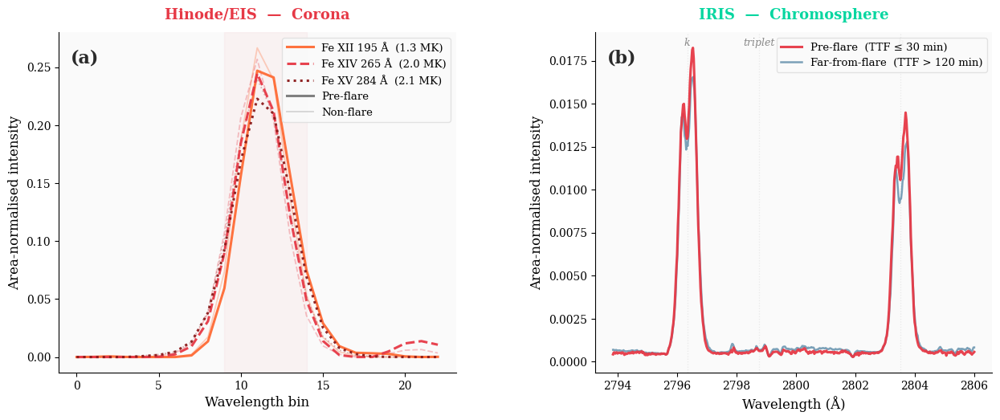
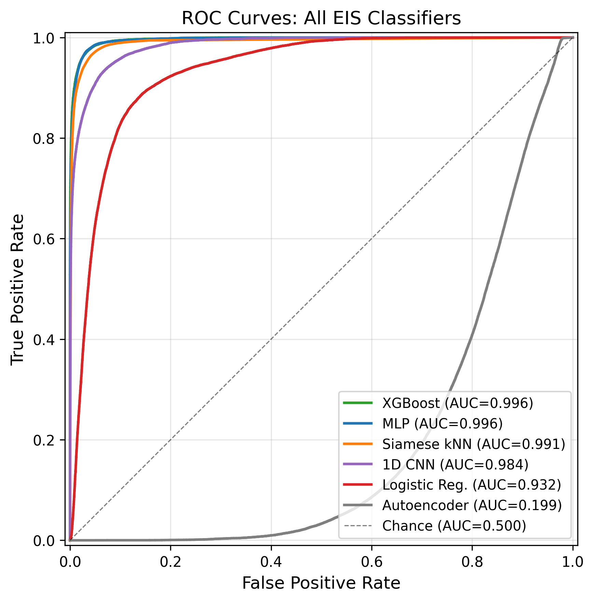
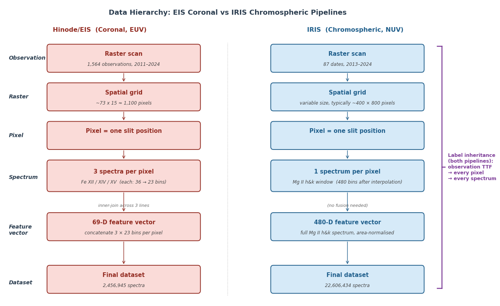
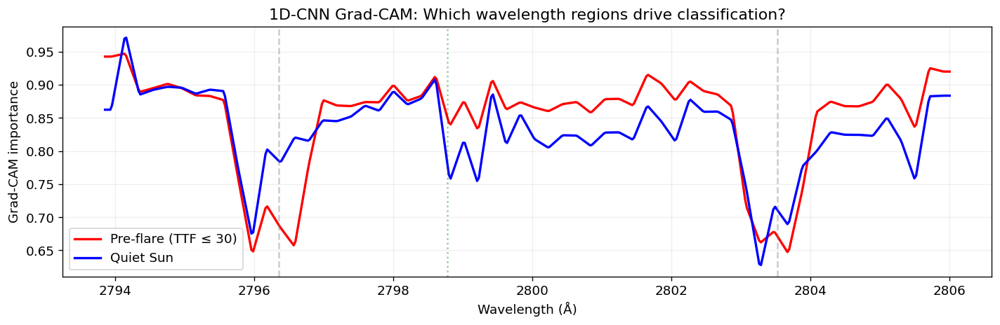

Six machine learning architectures, 25 million ultraviolet solar spectra, and a hunt for the earliest warning signs of a solar flare.
Solar flares are sudden eruptions on the Sun that can disrupt satellites, GPS, radio communications, and power grids on Earth. Forecasters currently rely on magnetic field images of the solar surface, which are useful for tracking slow, day-scale build-up but give little warning in the final hours before an eruption.
My dissertation asks a different question: can machine learning pull an early-warning signal out of ultraviolet spectra instead, light from two different layers of the Sun's atmosphere captured by two space-based instruments, Hinode/EIS (coronal) and IRIS (chromospheric)?

The headline result: the Sun's two atmospheric layers encode completely different kinds of information. The corona (the outer, hotter layer, seen by Hinode/EIS) reliably tells you whether an active region is going to flare: every one of six very different model families converged on the same answer, from logistic regression up to a Siamese network I trained with contrastive loss to learn a 64-dimensional embedding space, evaluated by nearest-neighbour lookup rather than a classification head. The signal stayed flat and stable across the entire 0–180 minute pre-flare window, no matter which architecture was asking.

The chromosphere (the cooler, lower layer, seen by IRIS) is messier but more interesting: for a meaningful subset of flare events it clearly encodes when. I built a spectral transformer from the ground up for this, multi-head self-attention over the wavelength axis with a learnable CLS token standing in for "the spectrum as a whole," trained on 22.6 million spectra, and it picked up a genuine temporal precursor signal in the final ~30 minutes before onset.
One of my favourite side-results: a hand-built 9-feature representation, just the kurtosis, skewness, and spread of three iron emission lines, outperformed an optimal 9-component PCA projection by 3.5 ROC-AUC points. Sometimes knowing the physics beats throwing more data-driven dimensionality reduction at a problem.
25 million spectra don't stay manageable by accident. Alongside the modelling, a fair amount of this dissertation was software engineering.

Every notebook runs automatic sanity checks on data shapes, label balance, and train/val/test disjointness that fail loudly on regression. On top of that, dataset summaries are reproduced and diffed against a canonical seed-42 split, and bootstrap resampling, multi-seed re-evaluation, and stratified k-fold cross-validation run as integration tests across the full pipeline.
Intermediate results are pickle-cached and keyed by a sha1 hash of the generating configuration, so a stale cache can't silently survive a parameter change. An explicit FORCE_REFIT toggle forces a clean rebuild when needed.
Fifteen notebooks (one main analysis pipeline, plus figure-generation and defensive-baseline groups) share preprocessing utilities and are version-controlled in Git. Each one auto-detects whether it's running on Google Colab or a local Python 3.10 environment, backed by a pinned requirements.txt and a README.
It's not enough for a model to be right, I wanted to know why. Grad-CAM on the 1D-CNN and SHAP attribution on the tree-based models both point at the same wavelength regions the domain physics would predict, which is its own kind of test.

Can pre-flare coronal spectra be reliably distinguished from non-flaring spectra under strict observation-disjoint evaluation, and is that result robust across classifier architectures from linear to metric-learning?
How does coronal classifier confidence vary with time-to-flare across the 0–180 minute pre-flare window: does it rise monotonically as prior work found for the chromosphere, or does it follow a different pattern?
Do coronal and chromospheric learned representations encode shared or complementary information about the pre-flare state on co-observed flare events?